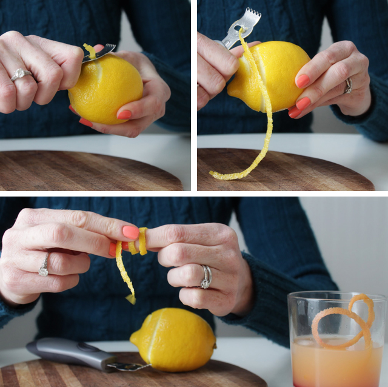
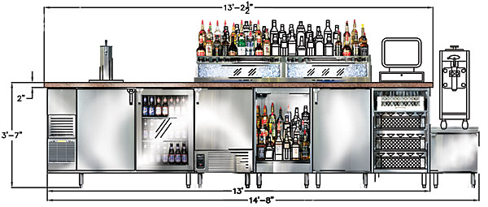

While You're Waiting
Wifi: username / password
| This presentation | http://bit.ly/CnCFebSlides |
| The worksheet | http://bit.ly/CnCFebWork |
| Install the Tools | http://bit.ly/CnCTheTools |


Intro to CSS
Our Host this Evening
Meet the C&C #LadyDevs

Sarah Duitsman

Program Director
Software Architect - Cerner
Tamara Copple

Program Co-Director
Business Analyst - New Directions Behavioral Health
Kayla Hennegin

Curriculum Director
Principal Software Engineer - RMS
Gabi Dombrowski

Mentor Director
Developer - Alt Legal
Lyndsey Padget

Presentation Director
Senior Software Engineer - Freightview
Join us on...


Laura Wagner

Craft Cocktail Extraordinaire
Tonight's Agenda: CSS
- The Basics
- CSS Compilers
- CSS Concepts
- Grouping & Special Selectors
- Text
- Media Queries & Responsive Websites
- Boxes
- Layout
- Organization & Best Practices
- Fun things you can do with CSS3
- Resources
Disclaimer

The Basics

What is CSS?
Cascading Style Sheets
Controls how elements look
Indicates style (font, color, size)
CSS3 is the latest version of CSS
Why do we care?


CSS Syntax
<img src="images/02-feb/channing.gif" class="awesome" id="vogue"/>
Element
img { border: 10px solid black; }
Class
.awesome { border-top-color: #666; border-left-color: #999; }
ID
#vogue { box-shadow: 0px 15px 15px rgba(0,0,0,0.3); }
How to Vogue

Semantic Class Names & IDs
Give a name that describes what the element is
Why?
- Provides clearer meaning
- Makes maintenance easier
'.white-nav' might sense on desktop...
WAT

Units of Measurement
Absolute
- - Pixels [px]
- - Others... but not as common
Relative
- - Percent [%]
- - rem/em
- - vh/vw
COLORS


<body bgcolor="#ff6600">
</body>
<body bgcolor="#f60">
</body>
<body bgcolor="orange">
</body>
<font color='chucknorris'>Redish</font>
<font color='#c00000'>Same as above</font>
<span style="color: chucknorris">Black</span>
Properties
> 300 different properties in CSS
Each has many valid values
CSS Compilers

What is a CSS Compiler?
(a.k.a. pre- and post- processors)
Allows you to write faster & cleaner CSS
But Browsers only support CSS...
so you use a different syntax and compile it!
Pre-processed code -> CSS

Why Sass?
Several pre-processors to choose from
- - Less
- - Stylus
- - Sass
Each are slightly different (features & syntax)
Sass is the most common
Sass offers syntax flexibility based on file ext...
Sass file extensions
.sass
- - No curly braces or semi-colons
- - So indentation is important!
- - Older version of Sass
.scss ("Sassy CSS")
- - Looks more similar to CSS
- - Any file: .css -> .scss
- - Newer version of Sass
Sass Superpowers
- Variables - giving styles a name
- Nesting - define styles within another style
- Math - ceiling / floor, rounding, min / max
- @import - link one CSS file to another
- Mixins - perform computations on inputs
- Minification - compress the CSS like a zip
- Loops - repeat color / position changes
- @extend - style A plus style B
Sass -> CSS example
-
Sass variable (source)
$secondaryColor: #cb6f10; -
Sass (source)
lighterDiv {
background-color: $secondaryColor;
border-top: 5px solid lighten($secondaryColor, 20%);
} -
CSS (compiled)
lighterDiv {
background-color: #cb6f10;
border-top: 5px solid #f1a250;
}
CSS Concepts
Something to get you started
See the Pen CSS Practice by Coding&CocktailsKC (@CodingCocktailsKC) on CodePen.
Include CSS in your project
-
Link to CSS file
<link rel="stylesheet" type="text/css" href="mystyles.css" media="screen" /> -
Import a CSS file from another CSS file
@import "newstyles.css"; -
Embed the CSS
<style media="screen" type="text/css">
...
<style> -
Add Inline CSS to HTML
<h2 style="color:red;background:black;">Hello</h2>
Rules for Cascading

It's a hierarchy: Order of CSS rules matter
- - Source Order (Later rules > earlier rules)
- - Specificity
- - Element selectors
- - Class selectors
- - ID selectors
- - !important
Inheritance, Comments,
& Browser Prefixes
html { font-size: 75%; } /* 75% of default (16px) = 12px */
h1 { font-size: 300%; } /* 300% of 12px = 36px */
p { background: inherit; }
-webkit-transition: all 4s ease;
-moz-transition: all 4s ease;
-ms-transition: all 4s ease;
-o-transition: all 4s ease;
transition: all 4s ease;
Grouping & Special Selectors
Grouping Selectors
<h1 id="one" class="two">This Should Be Red</h1>
#one.two { color: red; }
<h1 class="three four">Double Class</h1>
.three.four { color: red; }
.snippet#header.code.red { color: red; }
p, div { font-size: 20px; }
Special Selectors
-
Children
div > p { background-color: yellow; } -
Descendant
div p { background-color: yellow; } -
Adjacent [Siblings]
div + p { background-color: yellow; } -
Attribute
a[target="_blank"] { background-color: yellow; }
Pseudo Classes
-
/* unvisited link */
a:link {
color: #FF0000;
}
/* visited link */
a:visited {
color: #00FF00;
}
/* mouse over link */
a:hover {
color: #FF00FF;
}
/* selected link */
a:active {
color: #0000FF;
}
Pseudo Elements
- Uses double colons
- Introduced in CSS3
- Older browsers only support single colon
-
:before / ::before
:after / ::after
:placeholder / ::placeholder
Text

Common Text CSS Properties
-
color
{ color: green; } -
text-align (left, right, center, justify)
{ text-align: center; } -
font-size
{ font-size: 18px; } -
font-family
{ font-family: "Mr Roboto", "Machina", "Impact", "Verdana", "Times"; }
More about Font Family
- What is a Font Stack?
-
"Preferred Font",
"Next best thing",
"Something common and sorta close",
"Similar Web-safe",
"Generic font"
Font Family Best Practices
- List at least 2-3
- But not more than 6-10
-
Wrap font names in quotes
{ font-family: "Mr Roboto", Arial; }
{ font-family: "Mr Roboto", "Arial"; }
Font Family Resources
-
Web Safe:
- Arial / Helvetica
- Times New Roman / Times
- Courier New / Courier - Web Fonts: Google Fonts, Typekit
- Download: 1001fonts.com, dafont.com
Icons: Font-Awesome
-
Multiple ways to get Font-Awesome...
download or link to it -
fa-whatever
<i class="fa fa-code"></i> -
<i class="fa fa-facebook-official"></i>
Media Queries &
Responsive Websites

Media Query Anatomy
 varvy.com/mobile/media-queries.html
varvy.com/mobile/media-queries.html
Responsive Design

Boxes

Box Model
-
Height, width, padding, margin
#div1 {
width: 300px;
padding: 25px;
margin: 25px;
}
#div2 {
width: 80%;
padding: 60px 0px 25px 0px;
margin: 25px 8px;
} -
Content
#myDiv { content: "Hello world!"; }
Box Effects
-
Backgrounds
body { background-image: url("whatever.png"); } -
Borders
p.dashed {
border-style: dashed;
border-width: 5px;
border-color: red;
} -
Shadows
div { box-shadow: 10px 10px 5px #888888; }
Layout

Types of Layouts
-
Display / Inline
{ display: inline; }
{ visibility: hidden; } -
Padding / Margin
{ padding: 25px 50px; } -
Float, Position & Flexbox
{ float: right; position: absolute; flex-wrap: nowrap; } -
Z-Index
{ z-index: -1; }
Organization & Best Practices
Remember...

Browsers treat CSS differently
specificity wins (ie #myid p > p)
specificity wins (ie #myid p > p)

specificity.keegan.st
Organization
- Keep files organized!
- SRSLY.
-
Use lowercase & hyphens (BEM or others?)
.myAwesomeDiv { } /* camel case */
.my-awesome-div { } /* kebab case */.block--hidden { }
.block--mod .block__elem { }
.block__elem--mod { }
Best Practices
-
Use spaces
#myDiv {background-color:red; font-size: 14px;}
#myDiv{background-color:red;font-size:14px;} -
separate rules on new lines
#myDiv {
background-color:red;
font-size: 14px;
}
#myDiv {background-color:red; font-size: 14px;}
Further Options
-
Reset / Normalize
the-pastry-box-project.net/oli-studholme/2013-june-3 -
Use base styles
body, form {
margin: 0;
padding: 0;
}
Fun Things you can do with CSS

Things like this...
 pattle.github.io/simpsons-in-css
pattle.github.io/simpsons-in-css
Or this...
 mynameismatthieu.com/WOW
mynameismatthieu.com/WOW
Or even this...
 sitepoint.com/css3-pong-insane-things-to-do-with-css
sitepoint.com/css3-pong-insane-things-to-do-with-css
Gateway to fun
-
Manipulations
$('#myDiv').addClass('blueBorder'); -
Animations
#basicSlider {-webkit-transition: 1s ease-in width;}
#myAwesomeSlider {animation: mymove 5s infinite;}
@keyframes mymove {
from {top: 0px;}
to {top: 200px;}
}
Resources
Hone your skills with CSS Diner: flukeout.github.io
Font families with Google fonts: google.com/fonts
Flex your Flexbox skills:
flexboxfroggy.com
Browser Compatibility:
caniuse.com
Questions?

Things You'll Need
Wifi: username / password
| This presentation | http://bit.ly/CnCFebSlides |
| The worksheet | http://bit.ly/CnCFebWork |
| Install the Tools | http://bit.ly/CnCTheTools |
What's Next
- Find a buddy
- Take the Survey
- Join Slack
- Finish tonight's worksheet
- Find an online tutorial on CSS
- Register for next month's event
Keep up with us
codingandcocktails.kcwomenintech.org


#LadyDevs #KCWiT #CodingAndCocktailsKC